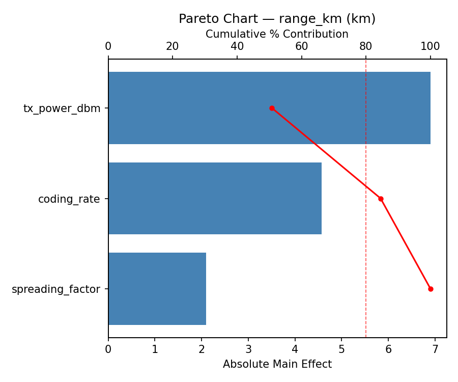
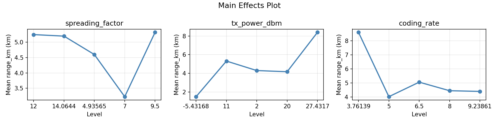
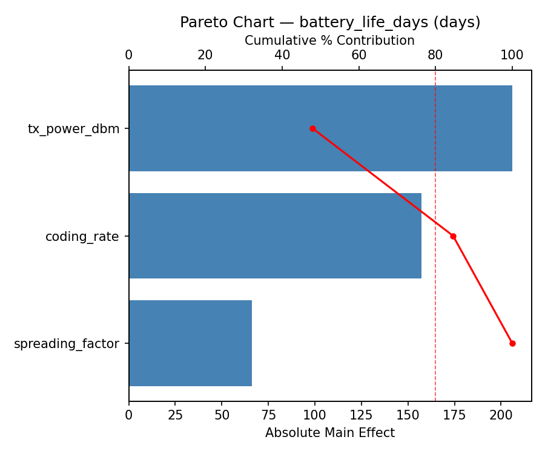
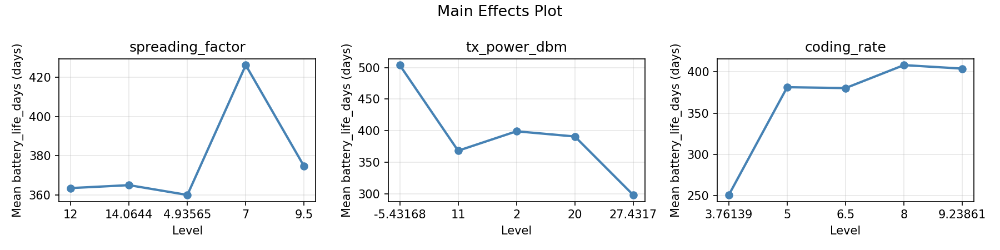
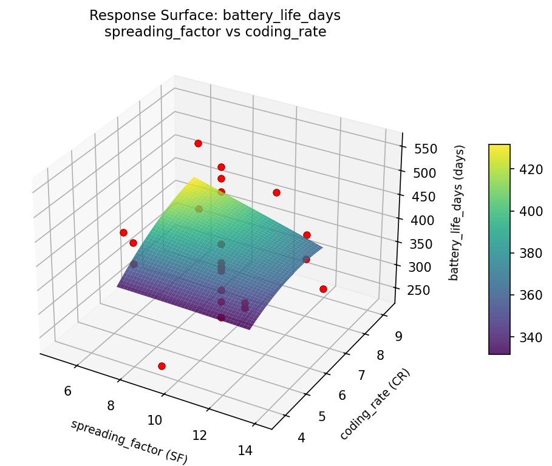
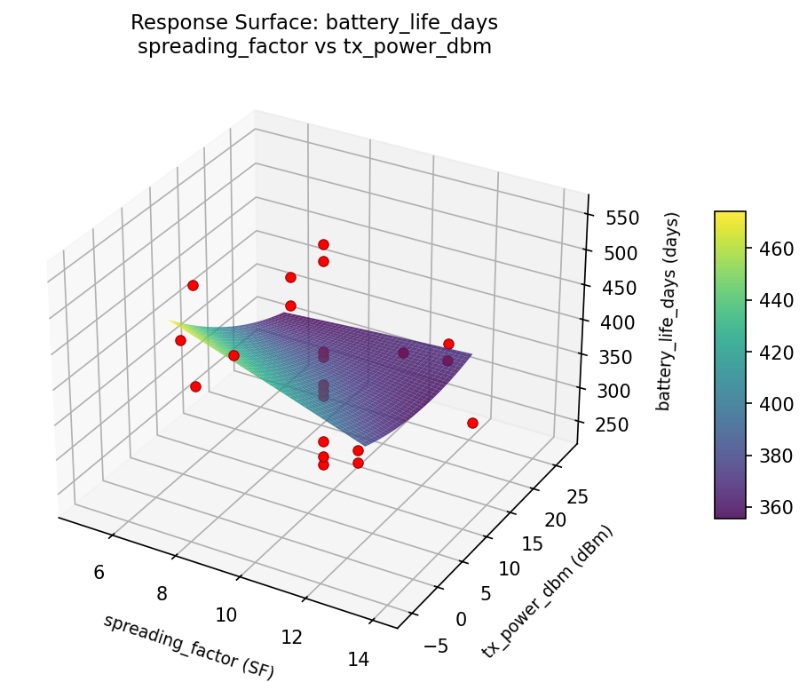
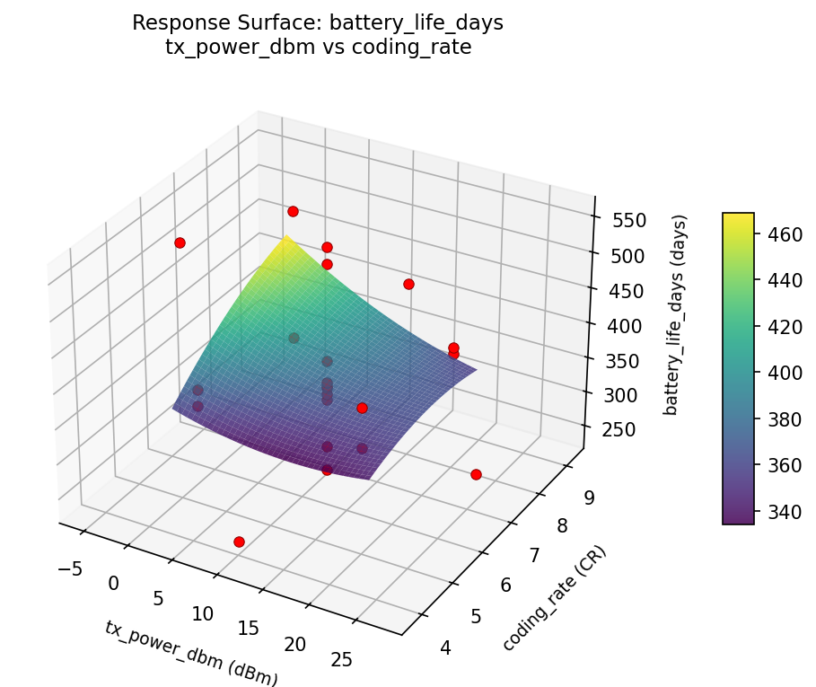
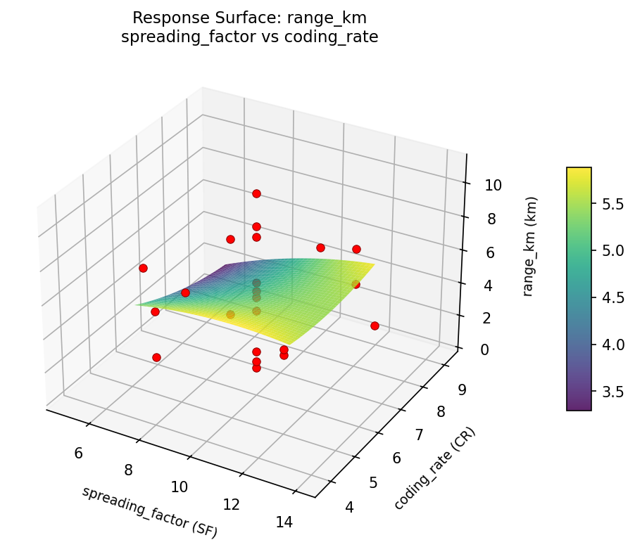
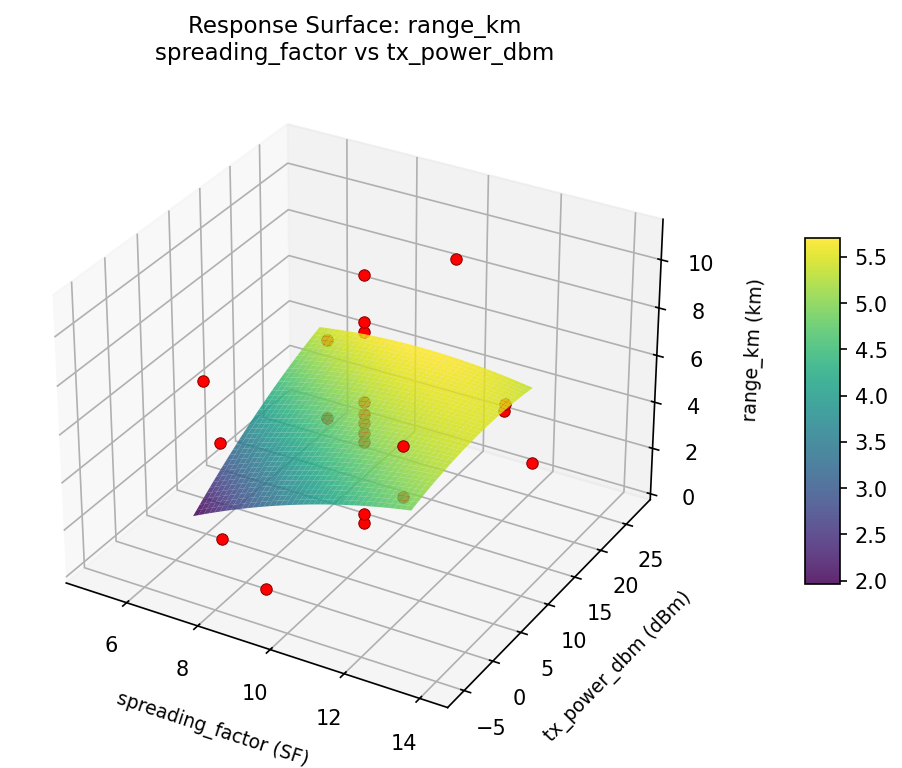
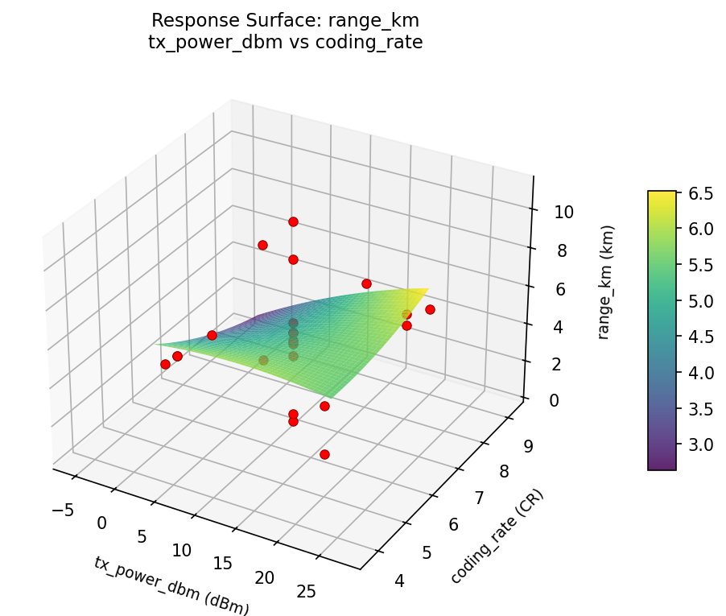

Experimental Setup
Factors
| Factor | Low | High | Unit |
|---|
spreading_factor | 7 | 12 | SF |
tx_power_dbm | 2 | 20 | dBm |
coding_rate | 5 | 8 | CR |
Fixed: frequency = 915MHz, bandwidth = 125kHz
Responses
| Response | Direction | Unit |
|---|
range_km | ↑ maximize | km |
battery_life_days | ↑ maximize | days |
Configuration
{
"metadata": {
"name": "LoRaWAN Parameters",
"description": "Central Composite design to optimize spreading factor, TX power, and coding rate for range and battery life"
},
"factors": [
{
"name": "spreading_factor",
"levels": [
"7",
"12"
],
"type": "continuous",
"unit": "SF"
},
{
"name": "tx_power_dbm",
"levels": [
"2",
"20"
],
"type": "continuous",
"unit": "dBm"
},
{
"name": "coding_rate",
"levels": [
"5",
"8"
],
"type": "continuous",
"unit": "CR"
}
],
"fixed_factors": {
"frequency": "915MHz",
"bandwidth": "125kHz"
},
"responses": [
{
"name": "range_km",
"optimize": "maximize",
"unit": "km"
},
{
"name": "battery_life_days",
"optimize": "maximize",
"unit": "days"
}
],
"settings": {
"operation": "central_composite",
"test_script": "use_cases/70_lorawan_parameters/sim.sh"
}
}
Experimental Matrix
The Central Composite Design produces 22 runs. Each row is one experiment with specific factor settings.
| Run | spreading_factor | tx_power_dbm | coding_rate |
|---|
| 1 | 9.5 | 11 | 6.5 |
| 2 | 12 | 2 | 8 |
| 3 | 7 | 20 | 5 |
| 4 | 9.5 | 27.4317 | 6.5 |
| 5 | 9.5 | 11 | 6.5 |
| 6 | 4.93565 | 11 | 6.5 |
| 7 | 9.5 | 11 | 3.76139 |
| 8 | 9.5 | 11 | 6.5 |
| 9 | 12 | 20 | 5 |
| 10 | 14.0644 | 11 | 6.5 |
| 11 | 9.5 | 11 | 6.5 |
| 12 | 9.5 | -5.43168 | 6.5 |
| 13 | 9.5 | 11 | 6.5 |
| 14 | 7 | 2 | 8 |
| 15 | 9.5 | 11 | 6.5 |
| 16 | 12 | 2 | 5 |
| 17 | 9.5 | 11 | 9.23861 |
| 18 | 12 | 20 | 8 |
| 19 | 9.5 | 11 | 6.5 |
| 20 | 7 | 2 | 5 |
| 21 | 7 | 20 | 8 |
| 22 | 9.5 | 11 | 6.5 |
Step-by-Step Workflow
1
Preview the design
$ python doe.py info --config use_cases/70_lorawan_parameters/config.json
2
Generate the runner script
$ python doe.py generate --config use_cases/70_lorawan_parameters/config.json \
--output use_cases/70_lorawan_parameters/results/run.sh --seed 42
3
Execute the experiments
$ bash use_cases/70_lorawan_parameters/results/run.sh
4
Analyze results
$ python doe.py analyze --config use_cases/70_lorawan_parameters/config.json
5
Get optimization recommendations
$ python doe.py optimize --config use_cases/70_lorawan_parameters/config.json
6
Generate the HTML report
$ python doe.py report --config use_cases/70_lorawan_parameters/config.json \
--output use_cases/70_lorawan_parameters/results/report.html
Features Exercised
| Feature | Value |
|---|
| Design type | central_composite |
| Factor types | continuous (all 3) |
| Arg style | double-dash |
| Responses | 2 (range_km ↑, battery_life_days ↑) |
| Total runs | 22 |
Analysis Results
Generated from actual experiment runs using the DOE Helper Tool.
Response: range_km
Top factors: coding_rate (58.7%), spreading_factor (36.9%), tx_power_dbm (4.4%).
Pareto Chart

Main Effects Plot

Response: battery_life_days
Top factors: spreading_factor (45.3%), coding_rate (44.3%), tx_power_dbm (10.3%).
Pareto Chart

Main Effects Plot

Response Surface Plots
3D surfaces fitted with quadratic RSM. Red dots are observed data points.
battery life days spreading factor vs coding rate

battery life days spreading factor vs tx power dbm

battery life days tx power dbm vs coding rate

range km spreading factor vs coding rate

range km spreading factor vs tx power dbm

range km tx power dbm vs coding rate

Full Analysis Output
=== Main Effects: range_km ===
Factor Effect Std Error % Contribution
--------------------------------------------------------------
coding_rate 6.9500 0.5851 58.7%
spreading_factor 4.3750 0.5851 36.9%
tx_power_dbm 0.5167 0.5851 4.4%
=== Summary Statistics: range_km ===
spreading_factor:
Level N Mean Std Min Max
------------------------------------------------------------
12 4 5.2750 1.0874 4.6000 6.9000
14.0644 1 4.0000 0.0000 4.0000 4.0000
4.93565 1 0.9000 0.0000 0.9000 0.9000
7 4 4.9750 2.9216 2.0000 9.0000
9.5 12 5.1417 3.1750 0.5000 10.9000
tx_power_dbm:
Level N Mean Std Min Max
------------------------------------------------------------
-5.43168 1 5.2000 0.0000 5.2000 5.2000
11 12 4.6833 3.4066 0.5000 10.9000
2 4 5.1500 2.8862 2.0000 9.0000
20 4 5.1000 1.2028 4.4000 6.9000
27.4317 1 5.2000 0.0000 5.2000 5.2000
coding_rate:
Level N Mean Std Min Max
------------------------------------------------------------
3.76139 1 4.8000 0.0000 4.8000 4.8000
5 4 3.9500 1.3102 2.0000 4.8000
6.5 12 4.2417 2.8154 0.5000 8.6000
8 4 6.3000 2.0928 4.5000 9.0000
9.23861 1 10.9000 0.0000 10.9000 10.9000
=== Main Effects: battery_life_days ===
Factor Effect Std Error % Contribution
--------------------------------------------------------------
spreading_factor 172.2500 18.1371 45.3%
coding_rate 168.5000 18.1371 44.3%
tx_power_dbm 39.2500 18.1371 10.3%
=== Summary Statistics: battery_life_days ===
spreading_factor:
Level N Mean Std Min Max
------------------------------------------------------------
12 4 358.7500 16.3783 339.0000 379.0000
14.0644 1 396.0000 0.0000 396.0000 396.0000
4.93565 1 531.0000 0.0000 531.0000 531.0000
7 4 366.7500 66.6852 273.0000 423.0000
9.5 12 379.1667 101.0282 239.0000 554.0000
tx_power_dbm:
Level N Mean Std Min Max
------------------------------------------------------------
-5.43168 1 357.0000 0.0000 357.0000 357.0000
11 12 396.2500 109.3020 239.0000 554.0000
2 4 358.0000 62.9603 273.0000 423.0000
20 4 367.5000 27.0863 339.0000 404.0000
27.4317 1 365.0000 0.0000 365.0000 365.0000
coding_rate:
Level N Mean Std Min Max
------------------------------------------------------------
3.76139 1 348.0000 0.0000 348.0000 348.0000
5 4 391.5000 27.6707 360.0000 423.0000
6.5 12 407.5000 97.8677 251.0000 554.0000
8 4 334.0000 42.2847 273.0000 367.0000
9.23861 1 239.0000 0.0000 239.0000 239.0000
Optimization Recommendations
=== Optimization: range_km ===
Direction: maximize
Best observed run: #18
spreading_factor = 9.5
tx_power_dbm = 11
coding_rate = 9.23861
Value: 10.9
RSM Model (linear, R² = 0.1937, Adj R² = 0.0593):
Coefficients:
intercept +4.8909
spreading_factor -0.8557
tx_power_dbm -0.2155
coding_rate +1.1444
RSM Model (quadratic, R² = 0.7219, Adj R² = 0.5133):
Coefficients:
intercept +4.6264
spreading_factor -0.8557
tx_power_dbm -0.2155
coding_rate +1.1444
spreading_factor*tx_power_dbm +0.7625
spreading_factor*coding_rate -2.2375
tx_power_dbm*coding_rate +1.2375
spreading_factor^2 -0.5878
tx_power_dbm^2 +0.0572
coding_rate^2 +0.9272
Curvature analysis:
coding_rate coef=+0.9272 convex (has a minimum)
spreading_factor coef=-0.5878 concave (has a maximum)
tx_power_dbm coef=+0.0572 negligible curvature
Notable interactions:
spreading_factor*coding_rate coef=-2.2375 (antagonistic)
tx_power_dbm*coding_rate coef=+1.2375 (synergistic)
spreading_factor*tx_power_dbm coef=+0.7625 (synergistic)
Predicted optimum (from quadratic model):
spreading_factor = 9.5
tx_power_dbm = 11
coding_rate = 9.23861
Predicted value: 9.8066
Model quality: Good fit — general trends are captured, some noise remains.
Factor importance:
1. coding_rate (effect: 6.6, contribution: 52.4%)
2. spreading_factor (effect: 5.1, contribution: 40.8%)
3. tx_power_dbm (effect: 0.8, contribution: 6.8%)
=== Optimization: battery_life_days ===
Direction: maximize
Best observed run: #6
spreading_factor = 14.0644
tx_power_dbm = 11
coding_rate = 6.5
Value: 554.0
RSM Model (linear, R² = 0.2052, Adj R² = 0.0728):
Coefficients:
intercept +380.8636
spreading_factor +39.2116
tx_power_dbm +6.0552
coding_rate -23.5019
RSM Model (quadratic, R² = 0.7565, Adj R² = 0.5739):
Coefficients:
intercept +382.2715
spreading_factor +39.2113
tx_power_dbm +6.0552
coding_rate -23.5019
spreading_factor*tx_power_dbm -28.8750
spreading_factor*coding_rate +68.3750
tx_power_dbm*coding_rate -47.1250
spreading_factor^2 +21.1459
tx_power_dbm^2 -0.0039
coding_rate^2 -23.2539
Curvature analysis:
coding_rate coef=-23.2539 concave (has a maximum)
spreading_factor coef=+21.1459 convex (has a minimum)
tx_power_dbm coef=-0.0039 negligible curvature
Notable interactions:
spreading_factor*coding_rate coef=+68.3750 (synergistic)
tx_power_dbm*coding_rate coef=-47.1250 (antagonistic)
spreading_factor*tx_power_dbm coef=-28.8750 (antagonistic)
Predicted optimum (from quadratic model):
spreading_factor = 12
tx_power_dbm = 2
coding_rate = 8
Predicted value: 534.1887
Model quality: Good fit — general trends are captured, some noise remains.
Factor importance:
1. spreading_factor (effect: 206.0, contribution: 50.3%)
2. coding_rate (effect: 156.5, contribution: 38.2%)
3. tx_power_dbm (effect: 47.0, contribution: 11.5%)